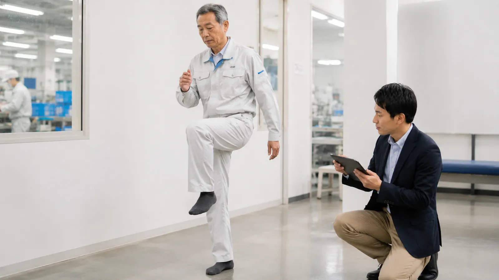

この記事の要点
- 両立支援は努力義務に：改正労働施策総合推進法により、令和8年4月1日から治療と就業の両立支援が事業主の努力義務になり、「治療と就業の両立支援指針」が示されています。
- 復帰の判断は情報をそろえてから：勤務情報を主治医に伝え、主治医の意見書と産業医等の意見を踏まえ、本人と話し合ったうえで会社が就業上の措置を決めます。
- 復帰後は段階的に戻す：重量物の取扱いや前かがみの作業、作業時間などを一時的に調整し、期間と見直し時期をプランに書いて面談で確認します。
- 再発を見据えて職場も見直す：腰痛予防対策指針は、腰痛の発生に関わる要因を職場から減らし、復帰時の不安を解消するよう求めています。
この記事が役立つ方
- 腰痛で休んでいる従業員の復帰時期が近づき、会社として何を準備すればよいか知りたい人事・総務の方
- 令和8年4月からの両立支援の努力義務化を受けて、社内の対応の流れを整えたい経営者・担当者の方
- 産業医がいない中小企業で、復帰する従業員の仕事内容をどう調整するか迷っている現場責任者の方
なぜ今、腰痛で休んだ従業員の復帰対応を見直すのですか？
高知労働局のお知らせ「治療と就業の両立支援が努力義務になります！」などによると、令和8年2月10日に「治療と就業の両立支援指針」（令和8年厚生労働省告示第28号）が公表され、改正労働施策総合推進法（令和7年法律第63号）により、令和8年4月1日から職場での治療と就業の両立支援が事業主の努力義務になりました。指針の概要（令和8年2月）では、対象を雇用形態にかかわらず全ての労働者とし、対象疾病を「反復・継続した治療が必要と医師が判断した疾病（負傷を含む）」としています。
腰痛については、厚生労働省の職場における腰痛予防対策指針が健康管理の一つとして「職場復帰時の措置」を挙げ、腰痛は再発する可能性が高いため、休業者等が職場に復帰する際は産業医等の意見を十分に尊重し、重量物取扱い等の作業方法や作業時間について就労上必要な措置を講じること、復帰時に抱く不安を十分に解消することを示しています。
北海道ではこれからの季節、雪かきや凍結した路面での移動など、腰に負担がかかる場面が増えます。休んでいた従業員が戻ってすぐ元の作業量に戻ると、負担が重なりやすくなります。復帰の流れを会社として決めておくことは、本人の安心だけでなく、周囲の従業員の負担を見通すことにもつながります。
復帰までに、会社は何をどの順番で進めればよいですか？
両立支援指針の概要と、厚生労働省の治療と仕事の両立支援ナビ「事業主の方へ」で示されている流れを、腰痛で休業した場合に当てはめると次のとおりです（会社の規模や体制に合わせて調整する「例」です）。
| 段階 | 会社が行うこと | 使える様式・確認先 |
|---|---|---|
| 休業に入るとき | 休業制度、休業中の賃金や手続き、職場復帰までの流れを本人に伝える。相談窓口を知らせる | 就業規則、社内の休暇・休業制度 |
| 復帰の申出・相談 | 本人の申出を受けて、復帰の希望時期や不安なことを聞く。本人の同意なく病状などの情報を広めない | 人事・総務、相談窓口 |
| 勤務情報を主治医へ伝える | 担当する作業（重さ、姿勢、作業時間、運転の有無など）を書面にまとめ、本人を通じて主治医に渡す | 様式例「勤務情報を主治医に提供する際の様式例」 |
| 主治医の意見を受け取る | 復帰の可否や、就業上の配慮が必要な内容について、本人を通じて主治医の意見書を受け取る | 様式例「職場復帰の可否等について主治医の意見を求める際の様式例」 |
| 産業医等の意見を聴き、本人と話し合う | 意見書をもとに産業医等の意見を聴き、本人や復帰先の職場の意見も踏まえて、就業上の措置を会社が決める | 産業医、産業保健総合支援センター |
| 職場復帰支援プランを作る | 復帰日、作業内容や時間の調整、期間、フォローアップ面談の時期を書面にする | 様式例「両立支援プラン／職場復帰支援プランの作成例」 |
| 復帰後のフォローアップ | 面談で経過を確認し、必要に応じてプランを見直す。調整を少しずつ元の働き方に戻す | 上司、人事・総務、産業医等 |
両立支援指針の概要では、就業継続の可否や就業上の措置は、主治医の意見書をもとに産業医等の意見を踏まえ、労働者と十分に話し合ったうえで事業主が最終的に決定するとされています。また、病気にかかったことだけを理由に安易に就業を禁止しないこと、個人情報を保護することも留意事項として示されています。様式例は厚生労働省「治療と仕事の両立について」のページで公開されています。
復帰直後の仕事内容は、どう調整すればよいですか？
調整の内容は、主治医や産業医等の意見に沿って決めます。腰痛予防対策指針では、腰痛の発生要因として、重量物の取扱い、前かがみ・ひねりなどの不自然な姿勢、長時間同じ姿勢を続ける作業といった「動作要因」、滑りやすい床や段差・寒さ・狭い作業空間といった「環境要因」、年齢や体格と作業台の不適合などの「個人的要因」、上司や同僚の支援不足などの「心理・社会的要因」が挙げられ、実際には複数の要因が重なって関わるとされています。復帰時の調整も、この4つの視点で確認すると漏れが少なくなります。
- 重量物の取扱い、人を抱え上げる作業、前かがみや中腰が続く作業を、一時的に減らしたり、2人で行ったりできるか
- 作業時間を短くする、残業や夜勤を一定期間控える、休憩や姿勢を変える機会を増やすことができるか
- 台車やリフトなどの補助具、作業台の高さの調整など、復帰した人だけでなく誰にとっても負担を減らせる手段があるか
- 通路の段差や床の滑り、冬の駐車場や出入口の凍結など、転倒やつまずきにつながる場所が残っていないか
- 調整の期間と、元の働き方に戻していく段階・判断する時期が、プランに書かれているか
- 上司や同僚に、本人の同意を得た範囲で、作業の分担が変わる理由と期間を伝えているか
- 痛みやしびれがぶり返したときに、本人が相談できる相手と、医療機関の受診を勧める流れが決まっているか
両立支援ナビでは、両立支援プランに盛り込む内容として、治療・通院の予定、就業上の措置（作業の転換、労働時間の短縮など）と治療への配慮の具体的な内容・実施時期・期間、フォローアップの方法とスケジュールを挙げています。また、あらかじめ再発を念頭に置いて支援を行うことも示されています。
再発を見据えて、職場では何を見直せばよいですか？
腰痛予防対策指針の解説では、復帰時の措置として、腰痛の発生に関与する要因を職場から排除・低減し、復帰時の不安を解消するよう努める必要があるとされています。復帰した人の作業だけを軽くしても、同じ作業を担う別の従業員に負担が移るだけでは、職場全体の腰痛のリスクは変わりません。
指針では、作業動作や姿勢、手順、時間などを定めた作業標準を作り、機器を導入したときなどに見直すこと、不自然な姿勢や反復作業が連続しないよう他の作業と組み合わせること、適宜休憩を設けて姿勢を変えられるようにすることが示されています。健康管理としては、腰部に著しい負担のかかる作業に常時従事する労働者に対し、配置する際とその後6か月以内ごとに1回、医師による腰痛の健康診断を行うこと、筋疲労の回復や柔軟性を高めるための腰痛予防体操を行う時間と場所を確保することも示されています。
また、指針の解説では、上司や同僚のサポート、休業を受け入れる環境づくり、職場復帰の支援、相談窓口づくりといった組織的な取組みが有用とされています。復帰の流れを就業規則や社内の手順書にまとめ、管理職に伝えておくことが、次に誰かが休んだときの備えにもなります。職場の腰痛対策の全体の進め方は職場の腰痛対策の進め方の記事、仕事中に腰を痛めた場合の労災の考え方は腰痛の労災認定の記事で紹介しています。
産業医がいない会社は、どこに相談できますか？
両立支援指針の概要と周知リーフレットでは、都道府県の産業保健総合支援センターに両立支援の専門スタッフ（社会保険労務士、心理職、保健師等）が配置され、研修や相談、事業場への訪問による制度導入支援、事業主と労働者の間の個別の調整や両立支援プランの作成支援などを無料で受けられると案内されています。北海道の企業は、北海道産業保健総合支援センターが窓口になります。
復帰の可否の判断は医師の意見にもとづいて行うものです。そのうえで、「復帰後にどの作業をどう調整するか」「職場の作業そのものをどう見直すか」は、会社が現場の状況を踏まえて考える部分です。
外部の専門家に依頼すると、何をしてもらえるか
プライズネス健康経営サポートでは、理学療法士が職場を訪問し、復帰する従業員が担当する作業の動作や姿勢、作業台の高さ、運搬の方法などを確認して、腰に負担がかかりやすい場面と見直しの優先順位を整理します。主治医や産業医等の意見で示された配慮を、現場の作業に置き換えて考えるときの材料としてご活用いただけます。復帰する本人を含む従業員向けに、腰に負担の少ない動き方や体操を実技で学ぶセミナーを行うこともできます。内容はサービス内容、費用の目安は料金プランでご確認いただけます（例：単発セミナー55,000円〜、職場訪問評価132,000円〜、定期サポート月額88,000円〜）。
本サービスは医療行為ではなく予防のための支援で、復帰の可否の判断や治療は行いません。特定の成果をお約束するものではありません。腰の痛みやしびれがある方には、医療機関への相談をおすすめしています。
休んだ人が安心して戻れる職場づくりを、一緒に考えませんか
「復帰する従業員の作業をどう調整すればよいか分からない」「同じ作業で腰を痛める人が続いている」という段階からご相談いただけます。まずは職場の腰痛リスクを3分でセルフチェックし、その結果をもとに無料相談をご利用ください。
よくある質問
腰痛でも、治療と就業の両立支援の対象になりますか？
厚生労働省の治療と就業の両立支援指針（概要）では、対象疾病を「反復・継続した治療が必要と医師が判断した疾病（負傷を含む）」としています。腰の病気やけがでも、主治医がそのように判断する場合は、同じ考え方で支援を進められます。対象になるか迷う場合は、産業医や都道府県の産業保健総合支援センターに相談してください。
復帰してよいかどうかは、誰が決めるのですか？
両立支援指針の考え方では、主治医の意見書をもとに産業医等の意見を聴き、本人と十分に話し合ったうえで、就業上の措置を含めて事業主が最終的に決定します。腰痛予防対策指針でも、職場復帰の際は産業医等の意見を十分に尊重し、作業方法や作業時間について必要な措置を講じることとされています。
産業医がいない小さな会社は、どうすればよいですか？
従業員50人未満で産業医の選任義務がない事業場でも、主治医の意見書をもとに本人と話し合い、仕事内容や時間を調整することはできます。都道府県の産業保健総合支援センター（北海道は北海道産業保健総合支援センター）では、両立支援の専門スタッフによる相談や、事業主と労働者の間の調整、両立支援プランの作成支援などを無料で受けられます。
復帰直後は、どんな仕事の調整をすればよいですか？
主治医や産業医等の意見に沿って、重量物の取扱い、前かがみや中腰が続く作業、長時間の同じ姿勢などを一時的に減らす、作業時間を短くする、休憩や姿勢を変える機会を増やす、といった調整が考えられます。調整の内容と期間、見直す時期を両立支援プラン（職場復帰支援プラン）に書いておき、面談で経過を確認しながら元の働き方に戻していきます。
プライズネスに依頼すると、何をしてもらえますか？
理学療法士が職場を訪問し、復帰する従業員が担当する作業の動作や姿勢、作業台の高さ、運搬の方法などを確認して、腰に負担がかかりやすい場面と見直しの優先順位を整理します。復帰する本人を含む従業員向けに、腰に負担の少ない動き方や体操を実技で学ぶセミナーを行うこともできます。費用の目安は単発セミナー55,000円〜、職場訪問評価132,000円〜、定期サポート月額88,000円〜です。医療行為ではない予防のための支援で、復帰の可否の判断や治療は行いません。特定の成果をお約束するものではなく、痛みやしびれがある方には医療機関への相談をおすすめしています。
関連する記事
この記事は、公的機関などの公開資料をもとにAIを活用して作成しています。表やチェック項目は説明用の例で、会社の体制や従業員の状態によって適した方法は異なります。制度や様式は変わることがあるため、ご判断の際は出典の最新情報をご確認ください。復帰の可否や医療上の判断が必要な症状については、主治医や産業医等にご相談ください。
出典・参考：
厚生労働省「治療と就業の両立支援指針（概要）」（令和8年2月、PDF）
厚生労働省・都道府県労働局 リーフレット「病気を抱える労働者の治療と就業の両立支援が努力義務になります！」（令和8年2月、PDF）
厚生労働省「治療と仕事の両立について」（治療と就業の両立支援指針・様式例）
高知労働局「治療と就業の両立支援が努力義務になります！」
厚生労働省 治療と仕事の両立支援ナビ「事業主の方へ」
厚生労働省「職場における腰痛予防対策指針」（解説・作業態様別の対策を含む、PDF）
（2026年11月24日確認）